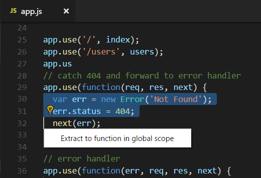
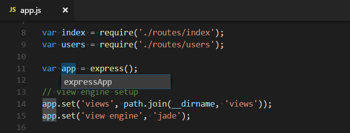

Refactoring
Source code refactoring can improve the quality and maintainability of your project by restructuring your code while not modifying the runtime behavior. Visual Studio Code supports refactoring operations (refactorings) such as Extract Method and Extract Variable to improve your code base from within your editor.

For example, a common refactoring used to avoid duplicating code (a maintenance headache) is the Extract Method refactoring, where you select source code that you'd like to reuse elsewhere and pull it out into its own shared method.
Refactorings are provided by a language service and VS Code has built-in support for TypeScript and JavaScript refactoring through the TypeScript language service. Refactoring support for other programming languages is provided through VS Code extensions which contribute language services. The UI and commands for refactoring are the same across languages, and in this topic we'll demonstrate refactoring support with the TypeScript language service.
Code Actions = Quick Fixes and refactorings
In VS Code, Code Actions can provide both refactorings and Quick Fixes for detected issues (highlighted with green squiggles). An available Code Action is announced by a lightbulb near the source code when the cursor is on a squiggle or selected text region. Clicking on the Code Action lightbulb or using the Quick Fix command kb(editor.action.quickFix) will display Quick Fixes and refactorings.
If you'd just like to see refactorings without Quick Fixes, you can use the Refactor command (kb(editor.action.refactor)).
Note: If you prefer to not see the Code Action lightbulb in your editor, you can disable lightbulbs with the
editor.lightbulb.enablesetting. You can still open Quick Fixes through Quick Fix command andkb(editor.action.quickFix)keyboard shortcut.
Refactoring actions
Extract Method
Select the source code you'd like to extract and then click on the lightbulb in the gutter or press (kb(editor.action.quickFix)) to see available refactorings. Source code fragments can be extracted into a new method, or into a new function at various different scopes. During the extract refactoring, you will be prompted to provide a meaningful name.
Extract Variable
TypeScript language service provides Extract to const refactoring to create a new local variable for the currently selected expression:

When working with classes, you can also extract a value to a new property.
Rename symbol
Renaming is a common operation related to refactoring source code and VS Code has a separate Rename Symbol command (kb(editor.action.rename)). Some languages support rename symbol across files. Press kb(editor.action.rename) and then type the new desired name and press kbstyle(Enter). All usages of the symbol will be renamed, across files.

Keybindings for Code Actions
The editor.action.codeAction command lets you configure keybindings for specific Code Actions. This keybinding, for example, triggers the Extract function refactoring Code Actions:
{
"key": "ctrl+shift+r ctrl+e",
"command": "editor.action.codeAction",
"args": {
"kind": "refactor.extract.function"
}
}
Code Action kinds are specified by extensions using the enhanced CodeActionProvided API. Kinds are hierarchical, so "kind": "refactor" will show all refactoring Code Actions, whereas "kind": "refactor.extract.function" will only show Extract function refactorings.
Using the above keybinding, if only a single "refactor.extract.function" Code Action is available, it will be automatically applied. If multiple Extract function Code Actions are available, we bring up a context menu to select them:

You can also control how/when Code Actions are automatically applied using the apply argument:
{
"key": "ctrl+shift+r ctrl+e",
"command": "editor.action.codeAction",
"args": {
"kind": "refactor.extract.function",
"apply": "first"
}
}
Valid values for "apply":
"first"- Always automatically apply the first available Code Action."ifSingle"- Default. Automatically apply the Code Action if only one is available. Otherwise, show the context menu."never"- Always show the Code Action context menu, even if only a single Code Action is available.
When a Code Action keybinding is configured with "preferred": true, only preferred Quick Fixes and refactorings are shown. A preferred Quick Fix addresses the underlying error, while a preferred refactoring is the most common refactoring choice. For example, while multiple refactor.extract.constant refactorings may exist, each extracting to a different scope in the file, the preferred refactor.extract.constant refactoring is the one that extracts to a local variable.
This keybinding uses "preferred": true to create a refactoring that always tries to extract the selected source code to a constant in the local scope:
{
"key": "shift+ctrl+e",
"command": "editor.action.codeAction",
"args": {
"kind": "refactor.extract.constant",
"preferred": true,
"apply": "ifsingle"
}
}
Extensions with refactorings
You can find extensions that support refactoring by looking in the VS Code Marketplace. You can go to the Extensions view (kb(workbench.view.extensions)) and type 'refactor' in the search box. You can then sort by install count or ratings to see which extensions are popular.
Tip: The extensions shown above are dynamically queried. Click on an extension tile above to read the description and reviews to decide which extension is best for you.
Next steps
- Intro Video - Code Editing - Watch an introductory video on code editing features.
- Code Navigation - VS Code lets you move quickly through your source code.
- Debugging - Learn about debugging with VS Code.
Common questions
Why don't I see any lightbulbs when there are errors in my code?
Lightbulbs (Code Actions) are only shown when your cursor hovers over the text showing the error. Hovering over the text will show the error description, but you need to move the cursor or select text to see lightbulbs for Quick Fixes and refactorings.